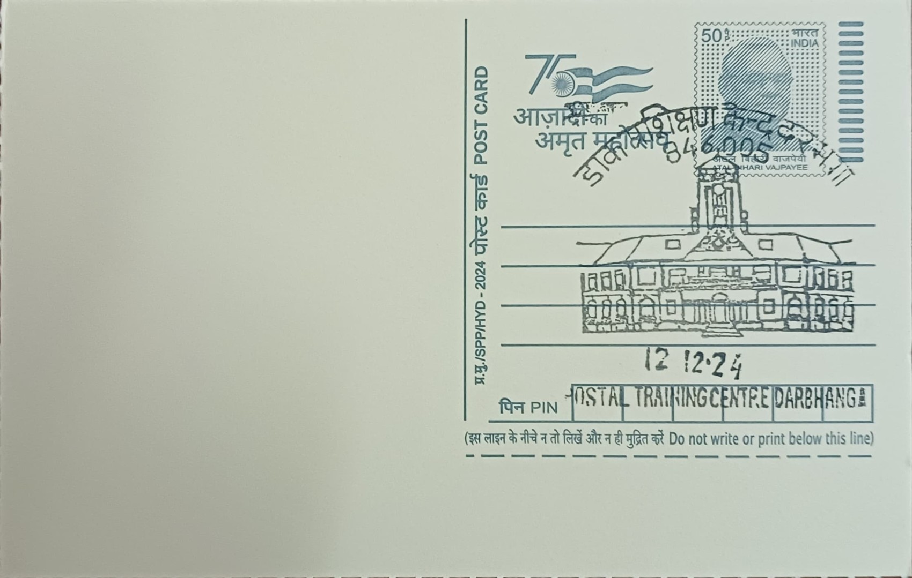

Postal Training Centre, Darbhanga
डाक प्रशिक्षण केंद्र, दरभंगा


The Postal Training Centre at Darbhanga owes its location to an accident of history rather than any planned institutional design: the facility operates out of what was once part of the palace complex of the Maharaja of Darbhanga, the seat of the Darbhanga Raj, one of the largest and wealthiest zamindari estates of colonial India. After the dissolution of the princely estate and its absorption into independent India's administrative structure, portions of the erstwhile royal establishment were repurposed for public institutional use, and the training centre's presence there links a department of the modern Indian state to the architectural and political legacy of the old Mithila aristocracy.
Within India Post's institutional hierarchy, the Postal Training Centre, Darbhanga is one of a small number of dedicated regional training establishments, traditionally counted alongside similar centres at Saharanpur, Vadodara, Mysuru, Guwahati, and Madurai, with additional centres added in subsequent years to expand national training capacity. The Darbhanga centre specifically caters to the training needs of postal personnel drawn from the Bihar, Assam, West Bengal, and Odisha postal circles, making it the principal instructional hub for the department's eastern and northeastern workforce and giving it an administrative footprint that extends well beyond the town in which it is situated.
The centre conducts structured induction and in-service training programmes for postal assistants, sorting staff, and other departmental recruits, covering the technical and procedural knowledge needed to operate India Post's mail, savings bank, insurance, and money-order services, among the other functions the department performs. Training is delivered by instructors who are themselves departmental officers, often selected on deputation from operational postings, a staffing model that keeps the curriculum closely tied to current field practice rather than abstract classroom theory. The centre's operations are coordinated through the office of its Director, who oversees course scheduling, staffing, and reporting to the postal circle administration.
A notable feature of the centre's functioning is its continued reliance on instructors brought in specifically for teaching assignments, with periodic calls inviting volunteers from within the department to serve at Darbhanga on deputation, reflecting how postal training establishments in India are staffed on a rotating rather than permanently resident faculty basis. This arrangement allows the centre to draw on officers with recent operational experience across different circles, keeping its instructional content aligned with evolving postal procedures, including the department's gradual expansion into digital and financial services delivered through the India Post Payments Bank and related initiatives.
Today the Postal Training Centre functions as a working arm of India Post's human-resources apparatus, its courses and deputation postings administered through routine departmental orders rather than any special public programme, and its presence in Darbhanga draws little attention beyond the postal service itself. The pairing of a modern training bureaucracy with the physical remnants of the Darbhanga Raj's palace architecture gives the site a layered character: an administrative facility quietly housed within what survives of a princely estate that once dominated the political and cultural life of the wider Mithila region.
| Date of Introduction | October 8, 2024 |
|---|---|
| Address | Sub Postmaster, |
| Postal Training Centre SO, | |
| Darbhanga (dt.), Bihar - 846005. |